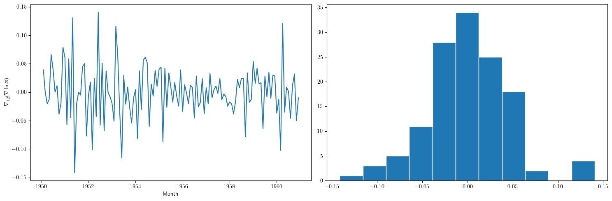
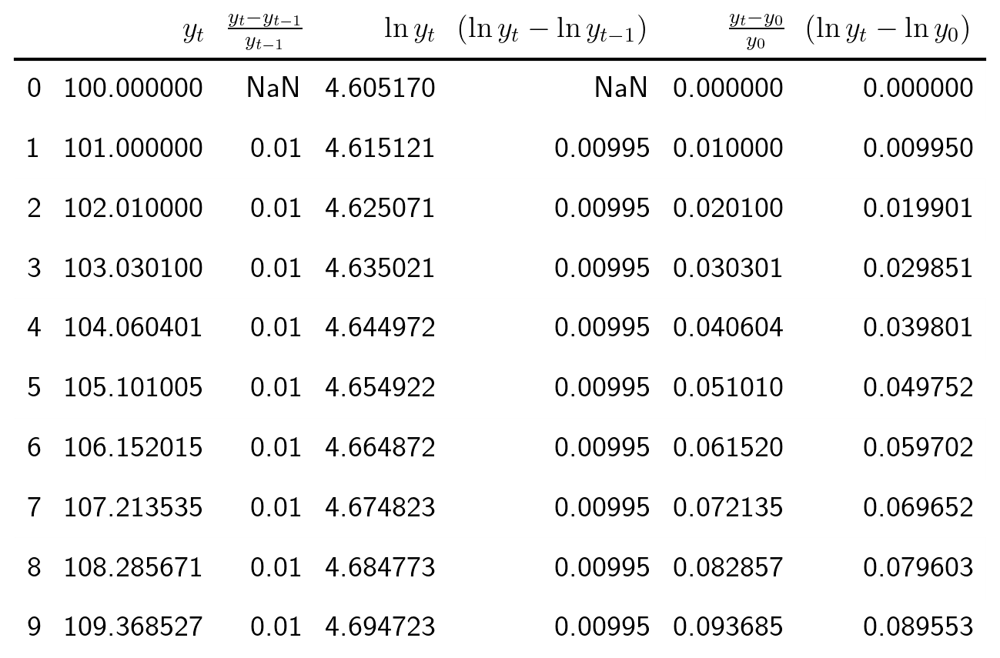

Econometría Aplicada. Lección 1
Table of Contents
En esta lección veremos algunos transformaciones de los datos para "hacerlos estacionarios".
Carga de algunos módulos de python
# Para trabajar con los datos y dibujarlos necesitamos cargar algunos módulos de python import numpy as np # linear algebra import pandas as pd # data processing, CSV file I/O (e.g. pd.read_csv) import matplotlib as mpl mpl.rc('text', usetex=True) mpl.rc('text.latex', preamble=r'\usepackage{amsmath}') import matplotlib.pyplot as plt # data visualization import dataframe_image as dfi
from sympy.printing.preview import preview def repr_png(tex, ImgFile): preamble = "\\documentclass[preview]{standalone}\n" \ "\\usepackage{booktabs,amsmath,amsfonts}\\begin{document}" preview(tex, filename=ImgFile, viewer='file', preamble=preamble, dvioptions=['-D','250'])
1. Procesos estocásticos y datos de series temporales
- Proceso estocástico
- es una secuencia de variables aleatorias, \(X_t\) donde el índice \(t\) recorre el conjunto de números enteros \((\mathbb{Z})\). \[\boldsymbol{X}\;=\; (\ldots,X_{-2},X_{-1},X_0,X_1,\ldots)\;=\; (X_t \mid t\in\mathbb{Z});\]
- Serie temporal
es una secuencia finita de datos tomados a lo largo del tiempo
\[\boldsymbol{x} = (x_1, x_2,\ldots x_n)\]
- Consideraremos cada dato \(x_t\) como una realización de \(X_t\).
Consecuentemente, consideraremos que una serie temporal es una realización de un tramo finito de un proceso estocástico:
\[(x_1, x_2,\ldots x_n) \text{ es una realización de }(X_t \mid t=1:n).\]
1.1. Datos de sección cruzada vs datos de series temporales
- Sección cruzada
- el índice NO es cronológico. La numeración (la
indexación) de cada dato es solo una asignación arbitraria de
etiquetas que identifican a cada individuo, empresa, objeto,
etc. que ha sido medido. Consecuentemente:
- el orden en el que aparecen los datos en la muestra es irrelevante.
- es decir, conocer únicamente el índice de un dato no permite deducir nada respecto de cualquier otro dato.
- Series temporales
- Corresponden a mediciones de un mismo objeto a
lo largo del tiempo. El índice indica el instante de cada medición.
Es habitual que el orden cronológico de los datos sea importante
para explicar cada uno de ellos.
- con frecuencia la medición en un instante de tiempo está relacionada con otras mediciones próximas en el tiempo. En tal caso…
- no debemos asumir que las variables aleatorias del proceso estocástico subyacente, \(\boldsymbol{X}=(X_t \mid t\in\mathbb{Z})\), sean independientes entre sí.
1.2. El desafío
El análisis de series temporales trata sobre la inferencia estadística de muestras que frecuentemente NO podemos asumir que sean realizaciones de variables aleatorias i.i.d. (independientes e idénticamente distribuidas).
Además,
Aunque el marco ideal es que la serie temporal analizada "sea estacionaria"
(abuso del lenguaje que expresa que podemos asumir que la serie es una realización de un proceso estocástico estacionario)
- lo habitual es que, por distintos motivos, NO lo sea
path = './datos/' df1 = pd.read_csv(path+'PIB_UEM.csv') df2 = pd.read_csv(path+'ProduccionCemento.csv') df3 = pd.read_csv(path+'IBEX35.csv') df4 = pd.read_csv(path+'ExportacionDeAcero.csv') #print(df1.head())
df1.plot(x='obs',xlabel='',title='PIB UEM', figsize=(15,4))
df2.plot(x='obs',xlabel='',title='Producción de cemento en España', figsize=(15,4))
df3.plot(x='obs',xlabel='',title='Rendimiento porcentual diario del IBEX 35', figsize=(15,4))
df4.plot(x='obs',xlabel='',title='Exportaciones españolas de acero', figsize=(15,4))

El desafío para el analista es
- primero
- transformar los datos para lograr que sean "estacionarios"
- y después
transformar los datos estacionarios en una secuencia de "datos i.i.d"
(nuevo abuso del lenguaje que expresa que podemos asumir que los datos son realizaciones de variables aleatorias i.i.d.)
2. Estacionariedad
El mayor objetivo del análisis de series temporales es inferir la distribución de \(\boldsymbol{X}=(X_t \mid t\in\mathbb{Z})\) usando una muestra finita (serie temporal) \(\boldsymbol{x}=(x_t \mid t=1:n)\).
Así podremos
- Predecir
- datos futuros
- Controlar
- datos futuros
Pero esto es casi imposible si los datos son inestables o caóticos a lo largo del tiempo
Por tanto, algún tipo de estabilidad o estacionariedad es necesaria.
2.1. Estacionariedad en sentido débil
Un proceso estocástico \(\boldsymbol{X}\) se dice estacionario (en sentido débil) si para todo \(t,k\in\mathbb{Z}\)
\begin{equation} \label{org3c1c597} E(X_t) = \mu \end{equation} \begin{equation} \label{orga2f4266} Cov(X_t,X_{t-k}) = \gamma_k \end{equation}- (\eqref{org3c1c597}) sugiere que las realizaciones de \(\boldsymbol{X}\) generalmente oscilan entorno a \(\mu\).
(\eqref{orga2f4266}) sugiere que la variabilidad de las realizaciones de \(\boldsymbol{X}\) entorno a \(\mu\) es constante, pues para el caso particular \(k=0\)
\[Cov(X_t,X_{t-0})=Var(X_t) = \gamma_0\quad\text{ para todo } t\]
Es decir, \(\gamma_0\) es la varianza común a todas las variables aleatorias del proceso.
Es más, la desigualdad de Chebyshev \[P\left(|X_t-\mu|\geq c\sigma\right)\leq\frac{1}{c^2},\quad\text{ donde } \sigma=\sqrt{\gamma_0}\] sugiere que para cualquier proceso estacionario (y un \(c\) grande), al pintar una realización, tan solo un pequeño porcentaje de los datos caerán fuera de la franja \(\left(\mu-c\sigma, \mu+c\sigma\right)\).
import statsmodels.api as sm np.random.seed(12345) arparams = np.array([.75, -.25]) maparams = np.array([.65, .35]) ar = np.r_[1, -arparams] # add zero-lag and negate ma = np.r_[1, maparams] # add zero-lag y = sm.tsa.arma_generate_sample(ar, ma, 250) plt.figure(figsize=(15,5)) plt.plot(y) #plt.savefig("./img/lecc01/stationaryTimeSeriesExample.png")
2.2. Función de autocovarianzas y función de autocorrelación
Cuando \(\boldsymbol{X}\) es un proceso estocástico (débilmente) estacionario
- La secuencia \(\;(\gamma_k \mid k\in\mathbb{Z}),\;\) donde \(\;\gamma_k = Cov(X_t,X_{t-k})\;\) se denomina función de autocovarianzas
Debido a la estacionariedad, la correlación entre \(X_t\) y \(X_{t+k}\) no depende de \(t\); tan solo depende de la distancia temporal \(k\) entre ambas variables.
- La secuencia \(\;(\rho_k \mid k\in\mathbb{Z}),\;\) donde \(\;\rho_k=\frac{Cov(X_t,X_{t-k})}{\sqrt{Var(X_t)Var(X_{t-k})}}=\frac{\gamma_k}{\gamma_0}\;\) se denomina función de autocorrelación (ACF).
3. Transformaciones de realizaciones de procesos estocásticos NO estacionarios
Un proceso estocástico \(\boldsymbol{X}=(X_t \mid t\in\mathbb{Z})\) puede ser
- NO estacionario en media
- porque \(E(X_t)\) depende de \(t\).
- NO estacionario en covarianza
- porque \(Cov(X_t,X_{t-k})\) depende de \(t\).
Separar o distinguir ambos tipos de no estacionariedad no es sencillo.
Veamos un ejemplo de serie temporal para la que
- no podemos asumir que sea realización de un proceso estocástico estacionario
y algunos intentos de transformación para obtener datos "estacionarios" (*)
(recuerde que esta expresión, aunque extendida, es un abuso del lenguaje).
3.1. Internat. airline passengers: monthly totals in thousands. Jan 49 – Dec 60
# Leemos los datos de un fichero csv y generamos un dataframe de pandas. OrigData = pd.read_csv('./database/Datasets-master/airline-passengers.csv') OrigData['Month']=pd.to_datetime(OrigData['Month']) OrigData=OrigData.set_index(['Month']) print(OrigData.head())
plt.figure(figsize=(15,5)) plt.subplot(1, 2, 1) plt.plot(OrigData['Passengers']) plt.xlabel("Month") plt.ylabel(r"Number of Air Passengers, ($\boldsymbol{x}$)") plt.subplot(1, 2, 2) plt.hist(OrigData['Passengers'], edgecolor='white', bins=11) plt.tight_layout() #plt.savefig("./img/lecc01/airlinepass+hist.png")
\[\boldsymbol{x}=(x_1,\ldots x_{114})\]
Serie "no estacionaria" (*):
- La media crece de año en año
- La variabilidad estacional crece de año en año (fíjese en la diferencia entre el verano y el otoño de cada año)
3.1.1. Trasformación logarítmica de los datos
- Al aplicar la función logarítmica transformamos monótonamente los datos estabilizando la varianza cuando los valores son mayores que 0.567 (aprox.)
- Pero ocurre lo contrario cuando los valores son pequeños (aumenta el valor absoluto de aquellos entre 0 y 0.567 aprox.). De hecho, \(\lim\limits_{x\to0} \ln(x)=-\infty\).
- Además, el logaritmo no está definido para valores negativos.
# Definir el rango de valores para x (empezando desde un número positivo ya que log(0) no está definido) x = np.linspace(0.01, 7, 400) # Valores de 0.1 a 10 # Calcular y = log(x) y = np.log(x) # Crear el gráfico plt.figure(figsize=(16, 5)) plt.plot(x, y, label='y = ln(x)') # Añadir etiquetas y título plt.xlabel('x') plt.ylabel('ln(x)') plt.title('Gráfico de la función logarítmica y = ln(x)') plt.axhline(0, color='black',linewidth=0.5) plt.axvline(0, color='black',linewidth=0.5) plt.grid(color = 'gray', linestyle = '--', linewidth = 0.5) plt.legend() #plt.savefig("./img/lecc01/funcion_logaritmica.png")
# Creamos un nuevo dataframe con los datos originales y varias transformaciones de los mismos TransformedData = OrigData.copy() TransformedData['dataLog'] = np.log(OrigData['Passengers']) TransformedData['dataLogDiff'] = TransformedData['dataLog'].diff(1) TransformedData['dataLogDiffDiff12'] = TransformedData['dataLogDiff'].diff(12)
plt.figure(figsize=(15,5)) plt.subplot(1, 2, 1) plt.plot(TransformedData['dataLog']) plt.xlabel("Month") plt.ylabel(r"Log-Passengers, ($\ln\boldsymbol{x}$) ") plt.subplot(1, 2, 2) plt.hist(TransformedData['dataLog'], edgecolor='white', bins=11) plt.tight_layout() #plt.savefig("./img/lecc01/airlinepass_log+hist.png")
\[\ln\boldsymbol{x}=\Big(\ln(x_1),\ldots \ln(x_{114})\Big)\]
Ésta tampoco parece la realización de un proceso estocástico estacionario
- Ahora la variabilidad estacional parece mantenerse de año en año
- Pero la media sigue creciendo de año en año
3.1.2. Primera diferencia del logarítmo de los datos
plt.figure(figsize=(15,5)) plt.subplot(1, 2, 1) plt.plot(TransformedData['dataLogDiff']) plt.xlabel("Month") plt.ylabel(r"$\nabla\ln\boldsymbol{x}$") plt.subplot(1, 2, 2) plt.hist(TransformedData['dataLogDiff'], edgecolor='white', bins=11) plt.tight_layout() #plt.savefig("./img/lecc01/airlinepass_logDiff+hist.png")
\[\boldsymbol{y}=\nabla\ln\boldsymbol{x}=\Big(\big[\ln(x_2)-\ln(x_1)\big],\ldots\; \big[\ln(x_{114})-\ln(x_{113})\big]\Big)\]
Esta serie tampoco parece "estacionaria" (*)
- Hay un componente periódico (de naturaleza estacional), debido a que hay pocos viajes en otoño y muchos en Navidad, Semana Santa y verano (i.e., el número esperado de viajeros parece cambiar en función del mes o estación del año).
3.1.3. Diferencia estacional de la primera diferencia del logarítmo de los datos
plt.figure(figsize=(15,5)) plt.subplot(1, 2, 1) plt.plot(TransformedData['dataLogDiffDiff12']) plt.xlabel("Month") plt.ylabel(r"$\nabla_{12}(\nabla\ln\boldsymbol{x})$") plt.subplot(1, 2, 2) plt.hist(TransformedData['dataLogDiffDiff12'], edgecolor='white', bins=11) plt.tight_layout() #plt.savefig("./img/lecc01/airlinepass_logDiffDiff12+hist.png")

\[\boldsymbol{z}=\nabla_{12}(\nabla\ln\boldsymbol{x})=\nabla_{12}(\boldsymbol{y})=\Big((y_{13}-y_{1}),\ldots\; (y_{113}-y_{101})\Big)\]
Esta serie se aproxima más al aspecto de la realización de un proceso estacionario
- Aunque parece haber más varianza a principios de los 50 que a finales
- De propina, el histograma sugiere una distribución aproximadamente Gaussiana
3.2. Tasa logarítmica de crecimiento
START = 100 UnoPorCiento = lambda n0, t: n0 if t<=1 else 1.01 * UnoPorCiento(n0, t-1) TasaLogCrecimiento = pd.DataFrame({'$y_t$':[UnoPorCiento(START,t+1) for t in range(10)]}) TasaLogCrecimiento['$\\frac{y_t-y_{t-1}}{y_{t-1}}$'] = TasaLogCrecimiento['$y_t$'].pct_change() TasaLogCrecimiento['$\\ln y_t$'] = np.log(TasaLogCrecimiento['$y_t$']) TasaLogCrecimiento['$\\nabla\\ln\\boldsymbol{y}$'] = TasaLogCrecimiento['$\\ln y_t$'] - TasaLogCrecimiento['$\\ln y_t$'].shift(+1) TasaLogCrecimiento['$\\frac{y_t-y_{0}}{y_{0}}$'] = TasaLogCrecimiento['$y_t$'].apply(lambda x: ((x/START)-1)) TasaLogCrecimiento['$\\ln y_t- \\ln y_{0}$'] = TasaLogCrecimiento['$\\ln y_t$'] - TasaLogCrecimiento['$\\ln y_t$'].iloc[0]
dfi.export(TasaLogCrecimiento, "./img/lecc01/TasaLogCrecimiento.png", use_mathjax=True, dpi=200, table_conversion="matplotlib")
La tasa logarítmica de variación de \(\boldsymbol{y}\) se define como \(z_t=\ln{y_t}-\ln{y_{t-1}};\) es decir
\[\boldsymbol{z}=\nabla\ln\boldsymbol{y} = \Big(\big[\ln(y_2)-\ln(y_1)\big],\ldots\; \big[\ln(y_{n})-\ln(y_{n-1})\big]\Big)\]
y se aproxima a la tasa de crecimiento (en tanto por uno) si el incremento es pequeño.

3.2.1. Comentarios sobre los datos transformados
| Transformación de la serie temporal \(\displaystyle \boldsymbol{y}=\{y_t\},\; t=1:n\) | Comentario |
|---|---|
| \(\boldsymbol{z}=\ln\boldsymbol{y}=\{\ln y_t\}\) | A veces independiza la volatilidad del nivel e induce normalidad. |
| \(\boldsymbol{z}=\nabla\boldsymbol{y}=\{y_t-y_{t-1}\}\) | Indica al crecimiento absoluto entre periodos consecutivos. |
| \(\boldsymbol{z}=\nabla\ln\boldsymbol{y}\) | Tasa logarítmica de crecimiento. Aproximación del crecimiento relativo entre periodos consecutivos. |
| \(\boldsymbol{z}=\nabla\nabla\ln\boldsymbol{y}=\nabla^2\ln\boldsymbol{y}\) | Cambio en la tasa log, de crecimiento. Indica la “aceleración” en el crecimiento relativo. |
| \(\boldsymbol{z}=\nabla_{s}\ln\boldsymbol{y}=\) \(\{\ln{y_t}-\ln{y_{t-s}}\}\) | Tasa de crecimiento acumulada en un ciclo estacional completo (\(s\) períodos). Cuando el período estacional es de un año, se conoce como “tasa anual” o “tasa interanual”. |
| \(\boldsymbol{z}=\nabla\nabla_{s}\ln\boldsymbol{y}\) | Cambio en la tasa de crecimiento acumulada en un ciclo estacional completo. Es un indicador de aceleración en el crecimiento acumulado. |